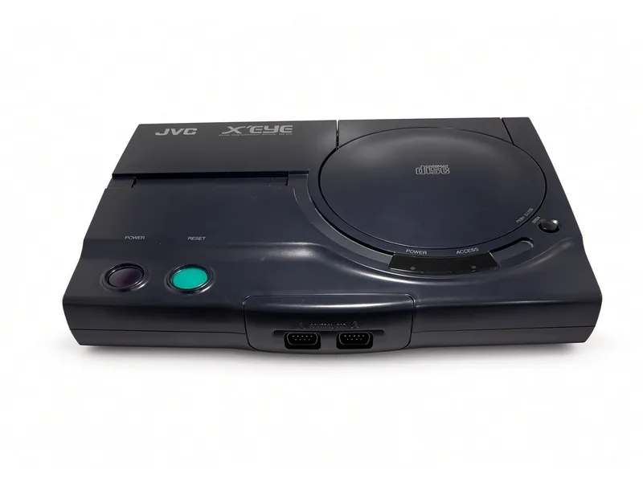
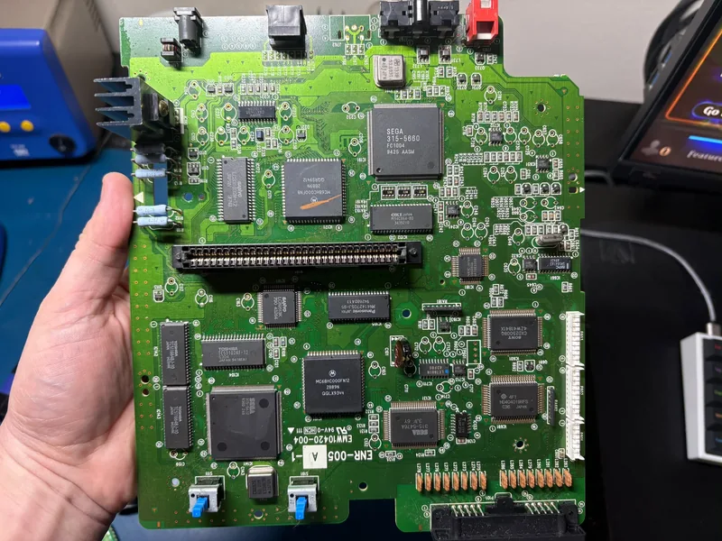
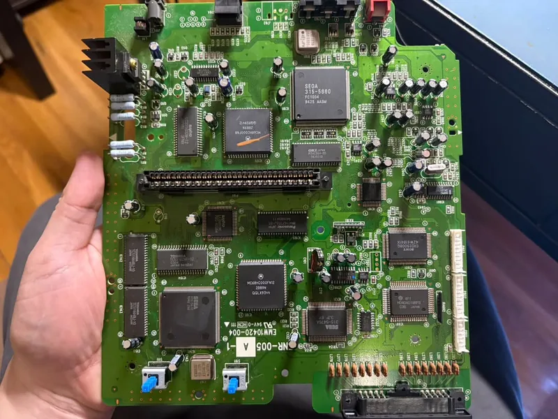
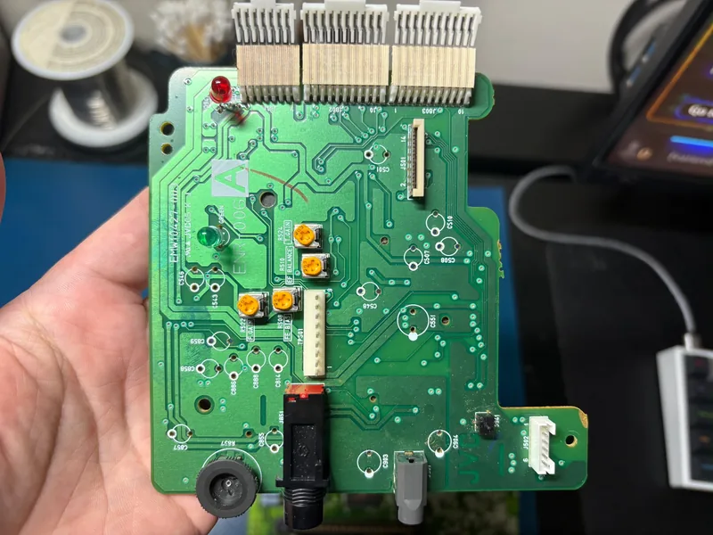
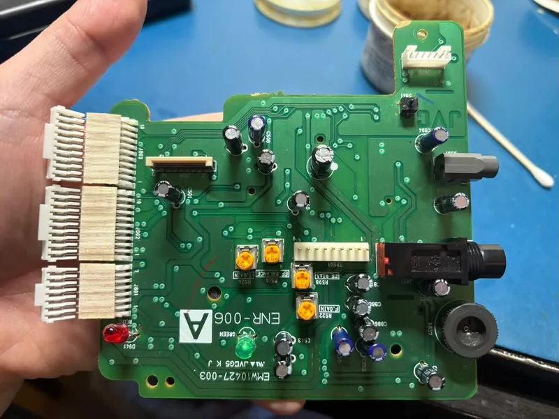
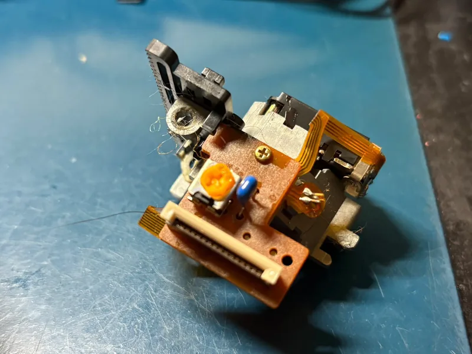
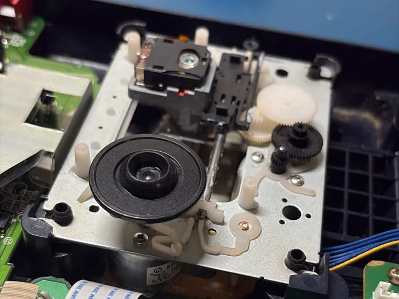
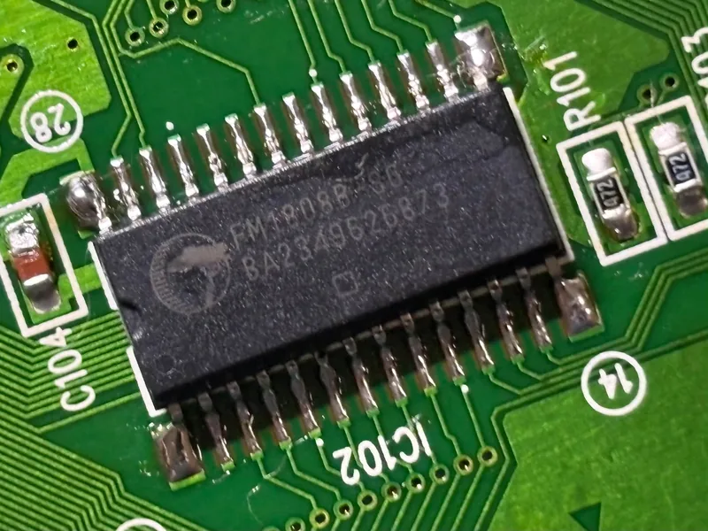

The X'Eye Comes Home
JVC's Genesis-and-Sega-CD-in-one-box is one of the rarer ways to play Sega, and one of the hardest to keep healthy. After a full servicing at iFixRetro — every capacitor on both boards, a new laser, a cleaned and greased drive, and battery-free saves — this one runs like it just left the factory.
In 1994 JVC sold a console that most people in North America never saw on a shelf: the X'Eye, the American version of its Japanese Wondermega. It is a Genesis and a Sega CD in a single chassis, built under license from Sega on Sega's own silicon, with a few things no Sega-branded machine ever had — a microphone input on the front for karaoke discs, a headphone jack with its own volume control, and JVC's audio section behind them. It launched at a price well above a Genesis and a Sega CD bought separately and sold accordingly, which is why an X'Eye is a rare sight today and a working one rarer still.
That second part is the catch. Every Sega CD of the era is a capacitor time bomb, and the X'Eye is two boards' worth of them. Thirty years on, the electrolytics leak, the laser weakens, the drive's grease hardens, and the backup RAM that holds your game saves forgets them the moment it loses power. This one had reached the point where it deserved a complete going-over rather than one more patch, so it went to iFixRetro — the same bench that put the IPS screen in the Game Boy Advance SP and did the screens and full recaps on the Turbo Express and the Nomad — with the brief to do everything at once.
The main board, stripped and rebuilt
The big board is the whole console: the Sega 315-5660 that is a Genesis on one chip, a second 68000 for the CD side, the Sony CD decoder, the RAM, and the cartridge slot across the middle. The first photo is the board with every electrolytic capacitor already pulled — bare pads, cleaned of thirty years of electrolyte — and the second is the same board with a fresh set soldered in.


The front board too
The smaller board behind the front panel carries the microphone jack, the headphone jack, the two indicator LEDs and the CD servo trimmers — and its own row of capacitors. A recap that stops at the main board leaves these in place, next to the audio path, where a leaking one does the most audible damage. This one got the same treatment: every electrolytic out, every one replaced.


A new laser, and a drive that moves again
The laser pickup is the part that ages whether or not the console is used, and a weak one reads discs slowly, then intermittently, then not at all. Rather than wait for the last stage, the pickup was replaced outright with a new unit. While the drive was apart, the rails the pickup rides on were cleaned of the old hardened grease and re-lubricated, and the mechanism itself was cleaned, so the sled travels smoothly from the inner tracks to the outer ones instead of sticking on the way.


Saves that cannot be lost
The stock backup RAM holds its contents only as long as something keeps it powered, and on a machine this age that something has long since stopped working: a save made on Tuesday is gone by the weekend. The fix is to replace the memory chip itself with ferroelectric RAM — an FM1808, pin-compatible, that keeps its contents with no power at all. No battery, no capacitor, nothing to replace in another thirty years.

What was done
- Main board recapped — Every electrolytic capacitor replaced, pads cleaned first.
- Front panel board recapped — The audio and indicator board, same treatment.
- Laser pickup replaced — A new unit, not an adjustment of the old one.
- Drive cleaned and greased — Rails re-lubricated, mechanism cleaned.
- FRAM save mod — FM1808 ferroelectric RAM in place of the backup RAM; saves persist with no battery.
- Serviced by — iFixRetro, who also shot the bench photos on this page.
Like every Genesis, the X'Eye puts RGB out of its AV port from the factory, so it joins the shelf with no video work at all: an RGB SCART cable into the switcher, a SCART to 4 BNC breakout out of it, and a Sony at the end. It plays Genesis cartridges on the left and Sega CD discs under the lid on the right, and for the first time in a long while, it does both without complaint.
Quick answers
What is the JVC X'Eye?
A 1994 console from JVC that combines a Sega Genesis and a Sega CD in one chassis, built under license on Sega's own chips. It is the North American version of JVC's Japanese Wondermega, and it adds a microphone input and a headphone jack that no Sega-branded machine had.
What does a full X'Eye servicing involve?
Replacing every electrolytic capacitor on both boards, replacing the laser pickup, cleaning and re-greasing the drive rails and mechanism, and swapping the backup RAM for ferroelectric RAM so saves survive without power. That is what was done to this one.
Why do Sega CD saves disappear?
The internal backup RAM only holds data while it is powered, and the part that keeps it powered between sessions fails with age. An FM1808 FRAM in its place keeps saves with no battery or capacitor at all.
Does the X'Eye need an RGB mod?
No. Like the Genesis it is built on, it carries RGB on its AV port from the factory. An RGB SCART cable and a SCART to 4 BNC breakout put it on a PVM or BVM as-is.
Bench photography on this page by iFixRetro, used with permission. The console mod table lists every machine’s path to the monitors, and the how-to walks the cable chain step by step.